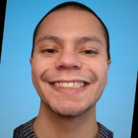
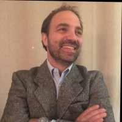

Nosotros
Arraigados en el Sur, innovando para el mundo.

Nuestros Orígenes
Aquabiotics Sur nació en el corazón de la Región de Los Lagos, en el sur de Chile, un territorio conocido por sus fiordos prístinos y su próspera industria acuícola. Reconocimos una paradoja: mientras que la industria del mejillón es un motor económico importante, también genera volúmenes significativos de residuos líquidos que actualmente se descartan.
No vimos esto como un desperdicio, sino como un depósito sin explotar de valiosas biomoléculas marinas. Nuestro equipo de biólogos e ingenieros se unió con una única misión: liderar la Economía Circular Azul a través de la biotecnología marina.
Misión
Liderar la Economía Circular Azul saneando nuestras costas, reemplazando los productos sintéticos con pureza sostenible y posicionando a la Patagonia como un centro global para la innovación biotecnológica.
Visión
Ser el líder global en metabolitos marinos reciclados, estableciendo el estándar de excelencia en economía circular y biotecnología desde el corazón de la Patagonia.
Ubicación
Operaciones estratégicas en la Región de Los Lagos, Chile, el centro de la industria del mejillón chileno.
Quiénes Somos

Byron Calderón
CEO | Biotecnólogo | Desarrollo de Bioprocesos Sostenibles | Estrategia Científica
Líder Científico y Estratégico
Especializado en el diseño de bioprocesos sostenibles, microbiología industrial e innovación basada en la ciencia. Su trabajo se fundamenta en la integración de la biología molecular, la ingeniería bioquímica y los principios de economía circular para transformar desafíos ambientales en soluciones biológicas escalables y de alto valor.
Con experiencia en investigación, biotecnología industrial y gestión de proyectos, aporta un enfoque estructurado y basado en evidencia a la innovación. Su trayectoria profesional abarca microbiología aplicada, optimización de bioprocesos, sistemas de agua, estándares de calidad y redacción técnica científica. Combina el rigor analítico con la capacidad de ejecución, asegurando que los conceptos científicos trasciendan el potencial de laboratorio hacia sistemas comercialmente viables.
En AquaBiotics Sur, desempeña un papel clave en el desarrollo científico y estratégico del modelo de biorrefinería circular azul de la empresa. Su enfoque se centra en el diseño y validación de procesos de bio-minería orgánica que transforman los flujos secundarios industriales de la industria mitilicultora de la Patagonia en compuestos bioactivos de origen marino, trazables y de alta pureza. Su trabajo apoya la transición de modelos extractivos a una biotecnología marina regenerativa y de valor agregado.
Contribuciones Clave:
- Diseño y optimización de bioprocesos
- Validación científica y marcos de calidad
- Métricas de sostenibilidad e integración de circularidad
- Documentación técnica y alineación regulatoria
- Desarrollo de hoja de ruta de innovación
Su visión se alinea con posicionar a la Patagonia chilena como un referente global en biotecnología marina sostenible. Le motiva particularmente la oportunidad de reemplazar ingredientes derivados de petroquímicos con alternativas biológicamente recicladas que preserven la integridad del ecosistema mientras generan valor económico.
Más allá del desarrollo operativo, aporta una mentalidad de pensamiento sistémico a la organización. Concibe la biotecnología marina no como un esfuerzo de un solo producto, sino como una plataforma para la transformación industrial regenerativa a largo plazo. Su trabajo refleja un compromiso con la integridad científica, la gestión ambiental y el impacto escalable.
En AquaBiotics Sur, representa la integración de un profundo entendimiento científico con una ejecución pragmática — asegurando que la innovación sea medible, trazable y globalmente competitiva.

Francisco Farkas
CMO | Conector Global | Líder en Desarrollo de Negocios | Arquitecto de Crecimiento Estratégico
Inversionista de Capital y Arquitecto de Crecimiento Estratégico
Un líder global en desarrollo de negocios con más de dos décadas de experiencia escalando emprendimientos de alto valor en hotelería de lujo, yates, retail premium y gestión de activos experienciales. Opera en la intersección del emprendimiento visionario y la ejecución disciplinada, especializándose en convertir conceptos complejos de alta gama en plataformas de crecimiento estructuradas e impulsadas por KPIs.
Reconocido internacionalmente por liderar la expansión de una marca premium británica tradicional hacia una red minorista de más de 350 puntos de venta en Escandinavia y la Península Ibérica, desarrolló una reputación por combinar estrategia de adquisiciones internacionales, excelencia operativa y precisión en P&L para entregar escalabilidad rentable.
Es Implementador y Campeón de EOS® (Entrepreneurial Operating System), aplicando ritmos de ejecución estructurados, sistemas de responsabilidad y marcos de gestión basados en datos para asegurar que el crecimiento no comprometa la integridad operativa.
En AquaBiotics Sur, se desempeña como Inversionista de Capital y Arquitecto de Crecimiento Estratégico. Actúa como el puente comercial entre la biotecnología marina avanzada y la escalabilidad del mercado global. Su rol se centra en traducir la innovación científica profunda en productos naturales del océano, premium y posicionados internacionalmente.
Contribuciones Clave:
- Desarrollo de alianzas globales
- Alineación estratégica de capital
- Arquitectura de salida al mercado (Go-to-market)
- Apalancamiento de redes internacionales
- Estructuración de modelos de negocio escalables
- Posicionamiento de marca premium
Aporta una fortaleza particular en conectar la innovación de nicho con mercados de alto valor. Su experiencia en ecosistemas de activos de lujo proporciona un entendimiento refinado del diseño del viaje del cliente, capital relacional a largo plazo y diferenciación experiencial — capacidades ahora aplicadas a la biotecnología marina sostenible.
Concibe a AquaBiotics Sur no solo como una empresa de biotecnología, sino como una plataforma de Economía Azul de alta integridad capaz de redefinir cómo se valorizan los recursos marinos a nivel global. Su liderazgo enfatiza la cadencia de ejecución, indicadores de desempeño medibles y la creación de valor a largo plazo.
En su esencia, es un constructor de puentes — entre la ciencia y los mercados, la innovación y el capital, la Patagonia y el mundo. Su misión dentro de AquaBiotics Sur es asegurar que la biotecnología marina de vanguardia logre un alcance global sin comprometer la sostenibilidad, la trazabilidad o la disciplina operativa.